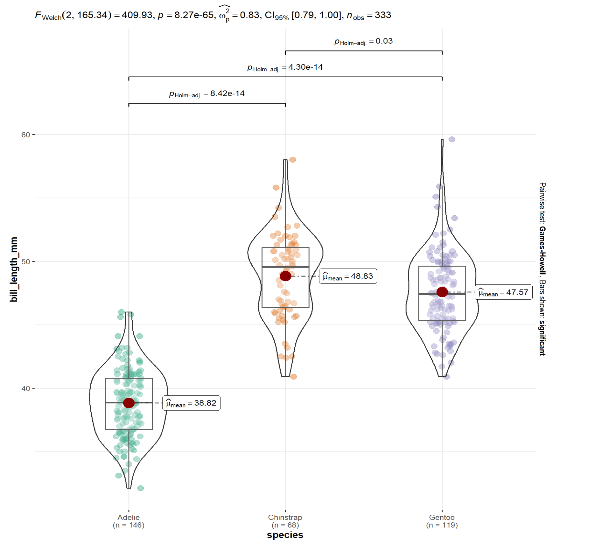

6 * 4[1] 24Quarto® is an open-source scientific and technical publishing system built on  .
.
Quarto provides a unified authoring framework for data science, combining your code, its results, and your prose. Quarto files are designed to be used in three ways:
You can install Quarto from https://quarto.org/docs/download/.
To get started, open RStudio and create a Quarto Document.

This will create a file with temporary content to help get you started.

All of the scripts provided below in this tutorial should be entered into the ‘Script Editor’. Clicking Render will generate the formatted document. You can also highlight code and click Run to execute specific lines of code.
The console is where you see the output of any statistical code. The environment panel displays information about the variables and objects in your current R session, while the files panel allows you to navigate your computer’s file system and manage your R projects.
Each quarto file starts with a set of code, called the YAML which is fenced within ---. The YAML specifics the metadata and document-wide settings.
For example, for a HTML document the YAML may be:
---
title: Introduction to Quarto
subtitle: My subtitle
author: Arun Mitra
date: last-modified
format:
html:
self-contained: true
execute:
echo: true
warning: false
toc: true
number-sections: true
---format specifies the type of output file to generate. Here it is an HTML file.
self-contained: true specifies that the HTML file generated should be standalone file.
echo: true enables the printing of code (only output is displayed), unless otherwise specified.
warning: false disables the printing of warning messages.
toc: true specifies that the table of contents should be shown; automatically generated based on the headings.
number-sections: specifies that the numbering of the sections should be shown.
# Heading 1
## Heading 2
### Heading 3
Bold text like **this** or __this__
Italicize text like *this* or _this_
Clickable link: <https://google.com>
[Hyperlink](google.com)
- Bullet point (nordered lists)
- Hyphen, follwed by 'tab'
1. Ordered list
2. Number, period, then 'tab'
| | Manual | Table |
|------------|----------|----------|
| Variable 1 | 11 | 21 |
| Variable 2 | 12 | 22 |
| Variable 3 | 12 | 23 |Bold text like this or this
Italicize text like this or this
Clickable link: https://google.com
| Var1 | Var2 | |
|---|---|---|
| Observation 1 | 11 | 21 |
| Observation 2 | 12 | 22 |
| Observation 3 | 12 | 23 |
Quarto can understand and run different programming languages, such as R and Python. This introduction focuses on R.
Code is specified within “code chunks”, which begin with ```{r} and end with ```
As an example, here’s a simple calculation using R; the syntax is shown along with the output automatically generated.
6 * 4[1] 24Here is one more example of creating a plot using an inbuilt dataset within R.
mtcars |>
plot()
There are a variety of options for how to handle the code and its output, called 'execution options'. These options are specified at the start of the code chunk, and begin with #|
For example, let us run the above code chunks with additional execution options:
#| echo: true
#| eval: false
6 * 46 * 4Note that the code has been printed, but not evaluated (the answer, has not been printed).
#| echo: false
#| eval: true
mtcars |>
plot()
Additionally you can use the option code-fold to hide the code chunk, and reveal only when needed.
#| code-fold: true
# Load Packages
library(ggstatsplot)
library(palmerpenguins)
library(tidyverse)
# Load Data
penguins <-
data(penguins) |>
get()
# Remove missing values
penguins <-
penguins |>
drop_na()
# Create a plot
ggbetweenstats(
data = penguins,
x = species,
y = bill_length_mm )# Load Packages
library(ggstatsplot)
library(palmerpenguins)
library(tidyverse)
# Load Data
penguins <-
data(penguins) |>
get()
# Remove missing values
penguins <-
penguins |>
drop_na()
# Create a plot
ggbetweenstats(
data = penguins,
x = species,
y = bill_length_mm )
Note that the the output has been printed, however, if you want to see the code which produced this plot, you can click on the interactive Code button.
Another way to organize a report is to present information in different tabs.
Similarly, as before, this is coded using ::: to denote the start and end of the information to be presented in tabs.
Level 3 headings (specified using ###) are used as the tab title and denote the start of each new tab.
Here a simple example:
::: {.panel-tabset}
### Panel 1
Content of panel 1
### Panel 2
```{r}
mtcars |>
plot()
```
:::Content of panel 1

To create and work with columns, use ::: or ::::. Like brackets, these are used to indicate the start and end the content to be placed in columns.
Here’s an example of a Two Column Layout:
Content of column 1:
Content of column 2:
This can be an image as well:
::: columns
::: column
Content of column 1:
- Bullet point 1
- Bullet point 1
- Bullet point 1
:::
::: column
Content of column 2:
This can be an image as well:
{width="50%"}
:::
:::Callouts are used to draw extra attention to certain concepts, or to more clearly indicate that certain content is supplemental or applicable to only some scenarios.
Callouts start with ::: {.callout-note}, then there’s the content, and it ends with :::.
There are five types of callouts:
note:::{.callout-note}
This is a callout block of the type "note".
:::This is a callout block of the type “note”.
warning:::{.callout-caution collapse="true"}
Callouts can be collapsible.
:::Callouts can be collapsible.
important:::{.callout-important}
# My heading
The first heading used within the callout
is used as the callout heading.
:::The first heading used within the callout is used as the callout heading.
tip:::{.callout-tip icon=false}
The icon can also be hidden, like this.
:::caution:::{.callout-caution}
This is a caution callout
:::This is a caution callout